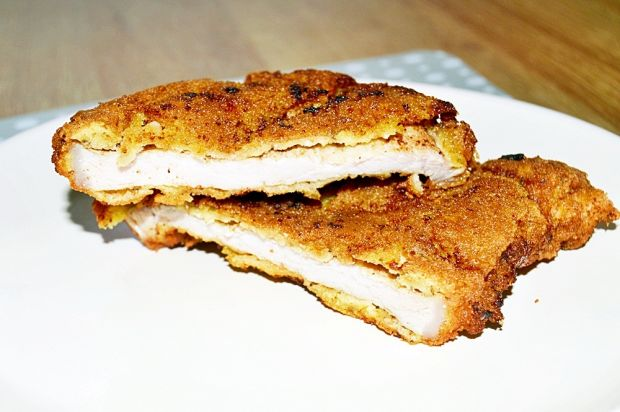

Kotlet Schabowy (Shnitzel)

Kotlet schabowy is a Polish variety of a breaded cutlet of pork coated with breadcrumbs. It is similar to Viennese schnitzel or Italian cotoletta and North and South American milanesa.
The history of schabowy dates back to the 19th century. Different recipes for cutlets such as schabowy are featured in an 1860 cookbook by Lucyna Ćwierczakiewiczowa, 365 obiadów za pięć złotych (365 Dinners for Five Złoty), but are missing from the 1786 cookbook by Wojciech Wielądek called Kucharz doskonały (The Perfect Chef), suggesting that the dish was not known (or at least not popular) before the 19th century.
Shopping list
- 2 boneless pork chops
- 1 egg
- 5-6 tabelspoons of bread crumbs
- vegetable oil or any desired cooking oil
- salt and pepper or herbal salt
 Prep Time
Prep Time Cook Time
Cook Time